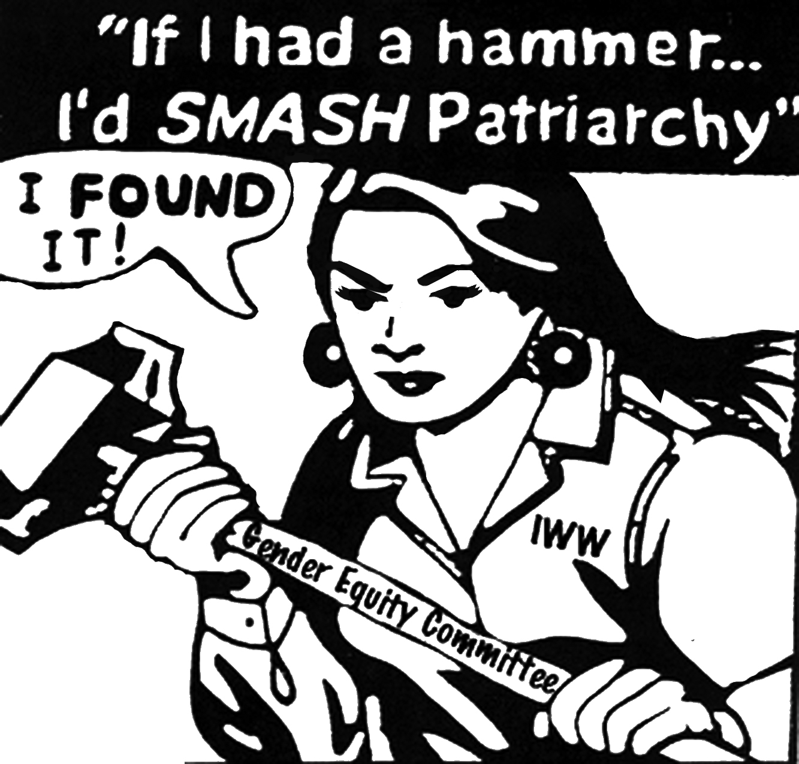

Submitted on Wed, 03/12/2014 - 5:20pm
 Insomnia Cookies has suspended IWW Organizer Tasia Edmonds w/o pay for a month, falsely claiming she was "unprofessional" and neglected to serve her any formal written notice. You're invited to take action against union-busting by the boutique cookie business. Join IWW and our allies as we picket in support of Tasia!
Insomnia Cookies has suspended IWW Organizer Tasia Edmonds w/o pay for a month, falsely claiming she was "unprofessional" and neglected to serve her any formal written notice. You're invited to take action against union-busting by the boutique cookie business. Join IWW and our allies as we picket in support of Tasia!
Please also email the company at pfs@serveubrands.com, & call CEO Seth Berkowitz at 877 632-6654. Suggested message: "It is intolerable that IWW Organizer Tasia Edmonds has been suspended without pay for her union activity. Please take immediate action to bring Tasia back to work, and compensate her for any loss in pay. Union-busting is disgusting!"
Submitted on Wed, 03/12/2014 - 5:10pm
By the IWW International Solidarity Commission
The International Solidarity Commission of the Industrial Workers of the World is outraged to learn of the continued violence by the Evin Prison authorities against Reza Shahabi, member and officer of the Syndicate of Workers of Tehran and Suburbs Bus Company (Sherkat-e Vahed).
Reza’s work on behalf of the bus drivers of Tehran, demanding pay increases to end the hunger, poverty, and misery of his fellow workers, remains as the sole reason for his continued confinement and abuse. Reza has battled the prison authorities for his very life ever since he was unjustly arrested and imprisoned under trumped up charges of “crimes against the State” in June of 2010. Due to torture and neglect in prison, Reza suffers from critical injuries to his spinal cord and needs serious and effective medical treatment. The supposed treatment for which he was briefly released in 2013 and February of 2014 was ineffective or non-existent.
Submitted on Tue, 03/11/2014 - 5:59pm
 By the IWW International Solidarity Commission
By the IWW International Solidarity Commission
The International Solidarity Commission of the Industrial Workers of the World (IWW) stands in solidarity with the struggle of all health care workers, doctors, and nurses in Greece against the regime of "availability" imposed on the public sector, supposedly to reduce debt. This availability regime, or mobility reserve system, entails the collective redundancy of 4,000 public sector workers and the transfer of 25,000 workers to part-time pay for eight months with subsequent dismissal or re-location.
While these changes aim to spread fear and reduce the workers’ collective agency, these public sector workers won't let the government intimidate them while they stick together to fight against this clear injustice.
Submitted on Fri, 03/07/2014 - 11:54pm
By the IWW Gender Equity Committee
This piece originally appeared in the March 2014 Industrial Worker
The Gender Equity Committee (GEC) is both honored and excited to reflect on the impact working women have had on the labor movement and working-class struggle, contributing to the creation of International Women’s Day (IWD).
IWD, for more than a century, has been and continues to be a day of working-class women’s resistance and organizing, bridging the women’s movement and the working-class labor movement.
Submitted on Tue, 03/04/2014 - 5:38pm
 From the Boston IWW
From the Boston IWW
Four workers at Insomnia Cookies' Cambridge store went on strike on August 19, protesting poverty pay and wretched working conditions, and demanding $15/hr, health benefits and a union at their workplace. The company illegally fired all four. For the next six months strikers, IWW members, allies, and student organizations at both Harvard and Boston University held pickets, marches, rallies, forums, phone blitzes, and organized boycotts, while workers continued organizing at both the Cambridge and Boston locations. The union also pursued legal charges through the National Labor Relations Board (NLRB).